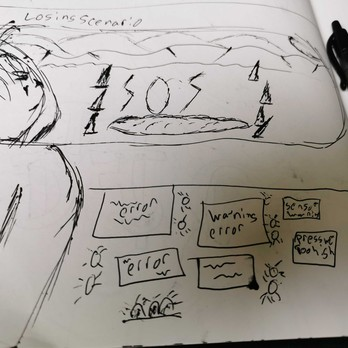

Narrative design
I started building games, and the stories inside them, during a Bachelor of Science in Game and Simulation Programming. I was lead writer and narrative designer on Heroes Guard: The Journal for UnderByte Studio, writing 20+ stat-driven branching narratives. My strongest work sits where character voice, branching structure, and long-run story consistency meet.
Game narrative work
-

Heroes Guard: The Journal
Lead writer and narrative designer on a replayable mobile gamebook: 20+ branching narratives, each mapped as a full decision tree before drafting, with Intelligence, Charisma, Dexterity, and Strength checks sending each build down a different route.
UnderByte Studio, March 2016 to July 2017
-

Shadow Health: Virtual Patient Design
Three virtual patients for a clinical training simulation, with dialogue written so each answer tests a learning goal. A narrative design challenge for an interview.
Interview challenge, 2022
-

Whiznook: Gamification of Team Development
Storyboards for a gamified team-building product: what the game looked like, where the player goes, the backstory, and the winning and losing scenarios, handed to the level artist to build into the game.
Whiznook, June 2021 to July 2022
What I bring to a narrative team
- Branching narrative architecture and decision trees
- System-driven choice and consequence, including stat checks
- Story outlines, beat sheets, and MICE thread structure
- Worldbuilding, lore, and canon maintenance
- Character bibles and voice rules
- Writing to gameplay, platform, and screen limits
Tools: Mindjet MindManager, Miro, Figma, Git, Torque (TorqueScript), Game Maker, UDK (Unreal), and Audacity for audio scripts.
Fiction
-
Demonspeaker
Novel, complete. Roughly 90,000 words, serialized chapter by chapter on Royal Road.
-
Umpkin the Bumpkin & Associated Tales
Anthology, complete. 27 stories and 40,000+ words across fantasy, science fiction, satire, and tragedy, rated around five stars on Royal Road. Some of the stories began as branching gamebook narratives and were rewritten as linear fiction.
-
Discordiae: Jackson's Story
Novel in editing, scheduled for December 2026.
-
The Fruit of Their Labor
Short story under consideration for a Riverfolk Books anthology.
-
My Uncle is Wyrd and The Other
Novels in progress, 50,000+ words each.
Related work
-
Linelight: Game Mechanics Documentation
Technical writing: a stage-by-stage account of how a wordless puzzle game teaches every rule, written for a legal team evaluating its acquisition.
-
Earlier projects from my game programming degree
Lawn Ninja, built in Torque with TorqueScript, with an original accompanying story. Year of the Rat, a tower defense game. Etherite, a fully mapped world and design document in what would now be called the LitRPG tradition, with an original audio script produced in Audacity. Plus samples in Game Maker and UDK.